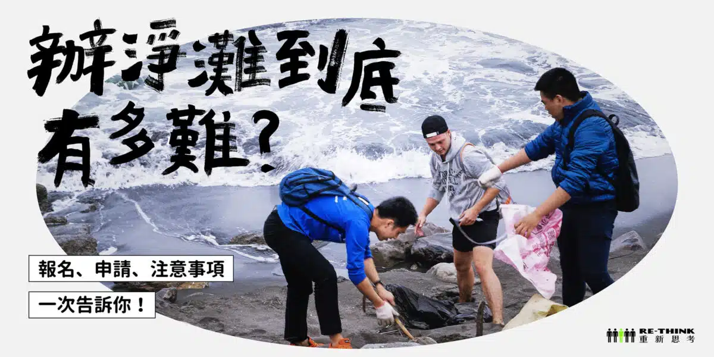

✨淨 灘 資 訊✨
淨灘前要事先申請嗎？就從這裡讓我們來告訴你！
如果自己沒有足夠的時間成本全台跑透透，可以先從家鄉開始，打開你的感官，去看看沒走過的海岸線吧！此外，那些名字響噹噹的觀光景點，多數有相關單位定期維護，因此相對較乾淨。
如果都是淨灘新手，需特別注意海岸地形，盡量避免岩岸與消波塊太多的地方。並事前自 潮汐預報 看漲退潮時間，挑漲潮的時候去勘查情況，以確保淨灘的時候，海灘腹地不至於因漲潮而被淹沒。
Tips：如果實在找不到，也可以上 環保署官網 尋找推薦海岸
至於想要報名淨灘或是申請淨灘？需要事先申請嗎？
報名淨灘傳送門：報名淨灘
申請淨灘傳送門：申請淨灘